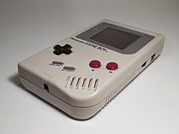

Un videojuego es un juego electrónico en el que una o más personas interactúan, por medio de un controlador, con un dispositivo que muestra imágenes de video.1 Este dispositivo electrónico, conocido genéricamente como «plataforma», puede ser una computadora, una máquina arcade, una videoconsola o un dispositivo portátil, como por ejemplo un teléfono móvil. Los videojuegos son, año por año, una de las principales industrias del arte y el entretenimiento.
Al dispositivo de entrada, usado para manipular un videojuego se lo conoce como controlador de videojuego, o mando, y varía dependiendo de la plataforma. Por ejemplo, un controlador podría únicamente consistir de un botón y una palanca de mando o joystick, mientras otro podría presentar una docena de botones y una o más palancas (mando). Los primeros juegos informáticos solían hacer uso de un teclado para llevar a cabo la interacción, o bien requerían que el usuario adquiriera un joystick con un botón como mínimo.2 Muchos juegos de computadora modernos permiten o exigen que el usuario utilice un teclado y un ratón de forma simultánea. Entre los controladores más típicos están los gamepads, joysticks, teclados, ratones y pantallas táctiles.
Generalmente, los videojuegos hacen uso de otras maneras, aparte de la imagen, de proveer la interactividad e información al jugador. El audio es casi universal, usándose dispositivos de reproducción de sonido, tales como altavoces y auriculares. Otro tipo de realimentación se hace a través de periféricos hápticos que producen vibración o retroalimentación de fuerza, usándose a veces la vibración para simular la retroalimentación de fuerza.
Los orígenes del videojuego se remontan a la década de 1950, cuando poco después de la aparición de las primeras computadoras electrónicas tras el fin de la Segunda Guerra Mundial, se llevaron a cabo los primeros intentos por implementar programas de carácter lúdico. Así, fueron creados el Nim (1951) o el Oxo (1952), juegos electrónicos pero que aún no son realmente videojuegos, y el Tennis for Two (1958) o el Spacewar! (1962), auténticos pioneros del género. Todos ellos eran todavía prototipos, juegos muy simples y de carácter experimental que no llegaron a comercializarse, entre otras cosas, porque funcionaban en unas máquinas que solo estaban disponibles en universidades o en institutos de investigación.
Típicamente, los videojuegos recrean entornos y situaciones virtuales en los que el videojugador puede controlar a uno o varios personajes (o cualquier otro elemento de dicho entorno), para conseguir uno o varios objetivos dentro de unas reglas determinadas.
Dependiendo del videojuego, una partida puede disputarla una sola persona contra la máquina, dos o más personas en la misma máquina, o bien múltiples jugadores a través de una red LAN o en línea vía Internet, compitiendo colaborativamente contra la máquina o entre sí.
Existen videojuegos de muchos tipos. Algunos de los géneros más representativos son los videojuegos de acción, rol, estrategia, simulación, deportes o aventura.
La creación de videojuegos es una actividad llevada a cabo por empresas conocidas como desarrolladoras de videojuegos. Estas se encargan de diseñar y programar el videojuego, desde el concepto inicial hasta el videojuego en su versión final. Esta es una actividad multidisciplinaria, que involucra profesionales de la informática, el diseño, el sonido, la actuación, etc. El proceso es similar a la creación de software en general, aunque difiere en la gran cantidad de aportes creativos (música, historia, diseño de personajes, niveles, etc.) necesarios. El desarrollo también varía en función de la plataforma objetivo (PC, móviles, consolas), el género (estrategia en tiempo real, RPG, aventura gráfica, plataformas, etc.) y la forma de visualización (2d, 2.5d y 3d). Algunas de las más importantes desarrolladoras de videojuegos a nivel internacional son: Blizzard Entertainment, Valve, Rockstar North, Bungie, Microsoft, Nintendo, BioWare, Sega , Sierra Entertainment o Zynga, a las cuales hay que añadir los estudios internos (a menudo homónimos) de las principales distribuidoras.